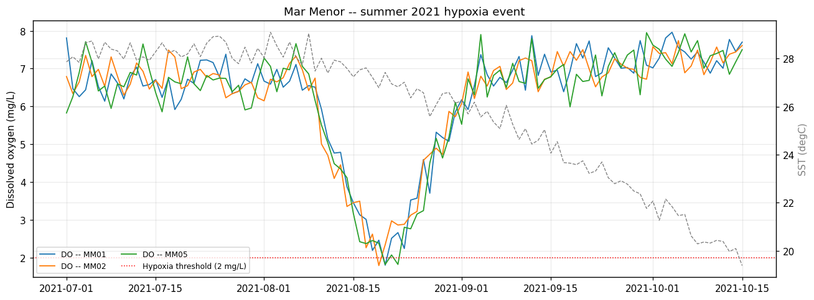
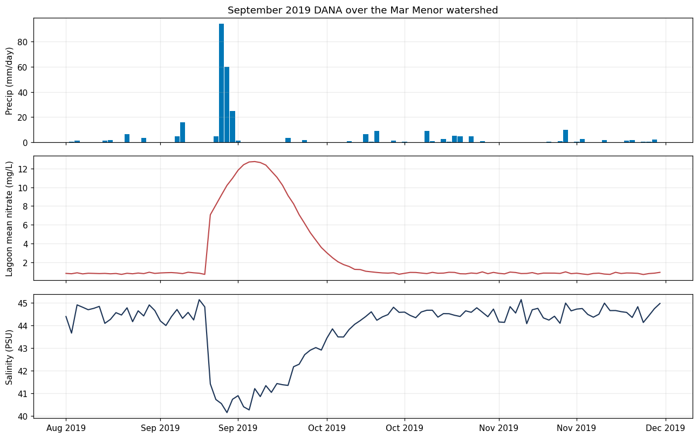
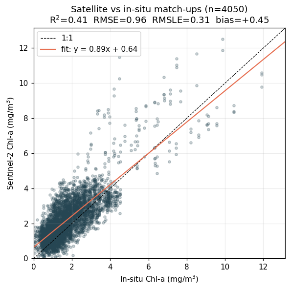
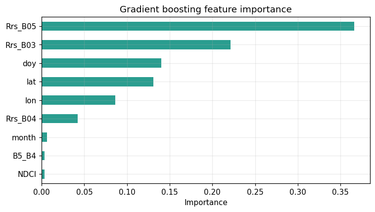
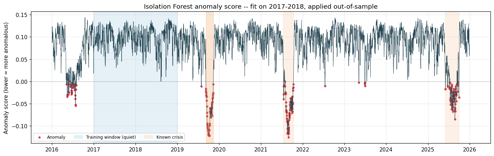

Step by step: validate the satellite against the buoy network, then learn to predict and flag the lagoon's crises — with honest statistics.
Daily buoy data (CARM/IMIDA) and watershed hydrology (CHS-SAIH) — the truth the satellite must agree with.
| Source | What |
|---|---|
| CARM Mar Menor | T, S, chl-a, DO, turbidity sondes |
| IMIDA / SIAM | agro-meteorology, nitrate proxies |
| CHS-SAIH | watershed rain & runoff |
| CMEMS INS-TAC | aggregated Med in-situ obs |
Our cached file mimics CARM exports: five stations, daily, 2016–2025, six variables.
The upstream agricultural data is what ultimately drives the lagoon — keep that causal chain in view.
Plot DO at the worst stations against the 2 mg/L hypoxia line, SST overlaid. This is the chart behind the fish-kill headlines.
focus = insitu.query( "station_id in ['MM01','MM02','MM05'] and " "'2021-07-01' <= date <= '2021-10-15'") ax.axhline(2.0, color='red', ls=':') # hypoxia

A cut-off cold drop dumped 300+ mm in 48 h. The buoys show salinity dropping ~4 PSU as nitrate spikes ten-fold — the watershed plume entering the lagoon.
dana = insitu.query("'2019-08-15'<=date<='2019-11-30'")
ws = pd.read_csv(DATA/'watershed_forcing.csv')
# precip (top) | nitrate (mid) | salinity (bottom)
Co-locate each satellite point with its nearest buoy and score the retrieval the way an ocean-colour paper would.
Pair each S2 point with its nearest buoy (within 4 km, same day). Report R², RMSE and RMSLE (log form — chl-a is log-normal), and always draw the 1:1 line.
m = matchup.dropna()
rmse = mean_squared_error(x, y) ** 0.5
rmsle = mean_squared_error(
np.log1p(x), np.log1p(y)) ** 0.5
r2 = r2_score(x, y)
A gradient-boosting regressor predicts chl-a from reflectances — but how we validate it decides whether the result is trustworthy.
| Scheme | Question | R² |
|---|---|---|
| TimeSeriesSplit | predict future dates? | high |
| GroupKFold by station | predict an unseen station? | ≈ 0.17 |
The gap is the lesson.
A model can look great in time yet be weak in space. When you talk about deploying somewhere new, report the unseen-station number, not the easy one.
Refit on all data and inspect the gradient-boosting importances. Red-edge bands and the band ratios dominate — the physics and the model agree.
model = GradientBoostingRegressor(
n_estimators=600, max_depth=4,
learning_rate=0.05)
model.fit(X, y)
imp = pd.Series(model.feature_importances_, FEATS)
Multivariate anomalies across six variables — trained only on the quiet years, judged out-of-sample.
Fit on the calm 2017–2018 baseline only, then apply to 2019+. Every later flag is genuinely out-of-sample — otherwise the detector just learns the crises as normal.
train = sm.query("date < '2019-01-01'")
iso = IsolationForest(n_estimators=300,
contamination=0.03).fit(train[FEATURES])
sm['anomaly'] = iso.predict(sm[FEATURES])
| Crisis | First flag | Outcome |
|---|---|---|
| 2019 DANA | −42 days | early warning |
| 2021 anoxia | +2 days | late (a miss) |
| 2025 bloom | +1 day | late (a miss) |
A flag before the start is lead time — a win. A flag after is detection delay — a miss. Lumping them together is how monitoring papers oversell themselves.